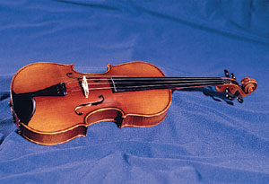

Why is it that the The moderating team link on the home page of the forum only shows Administrators? I recall it should be displaying (Global) Moderators also.
It's fairly easy to find the mods, global mods and FF6 Minibosses from that page but I suppose it could be easier.
Yeah well spotted Eldrial. It definatly did show all of the different Admins and mods before. I wonder why it has changed? 
Yeah, that page is indeed different.
What happened?
What happened?
Hmm? What's happened to that page?  Keron, you've got some 'splainin to do!
Keron, you've got some 'splainin to do!
Keron, you've got some 'splainin to do!Looks like Keron's been fiddlin' again.
Use this instead, dude.
Use this instead, dude.

Huh? What?
*Looks at the page*
Agh!!!! It changed!!
*Jumps out the window while calling 911*
*Realizes that he doesn't have connection in this city*
*Yawns*
No, but really, where did the mod page go? And Eldrial, I though you were absent. But I'm glad to have you posting again, although I barely knew you.
*Looks at the page*
Agh!!!! It changed!!
*Jumps out the window while calling 911*
*Realizes that he doesn't have connection in this city*
*Yawns*
No, but really, where did the mod page go? And Eldrial, I though you were absent. But I'm glad to have you posting again, although I barely knew you.
Keron why wont you leave out utopia alone?
I noticed it, didn't really mind, though found it annoying because I had to find a mod for something.
There's a fully justifiable reason for all this. It's part of Keron's security measures.
(What? Let you know what the reason is? No chance.)
(What? Let you know what the reason is? No chance.)
doesn't botheer me in the slightest. by now you, evveryone who posted above me should know who the moderators are.
I sort of know what the reason is. If you look, the URL of the page is actually for the member list of Admins. Not the proper mod page. Where as if you go here: http://metanet.2.forumer.com/index.php?act...ts&CODE=leaders you find the proper page.
(yes I use Fmods too Keron, I saw your post about this.)
(yes I use Fmods too Keron, I saw your post about this.)
Hm...strange.
Maybe Keron's being selfish and put up all the admins instead, to make all the other mods feel sad.")
I'd sure like to know why it's like that, though.
Maybe Keron's being selfish and put up all the admins instead, to make all the other mods feel sad.
I'd sure like to know why it's like that, though.
Wah? Smartalco is a mod? Why does it show Keron is both mod and admin sections?
Wah? Smartalco is a mod? Why does it show Keron is both mod and admin sections?Yeah, smartalco got modship over T&I in a bet. Keron posted a really big score on the last stage of Kunoom, and he said anyone who beats it gets admin. Well, smartalco beat it, and although Keron didn't give him admin, he did give him modship over there.
No, he won adminship on technical terms. He can be as adminy as he want, but he "apparently" just "wants" to mod only T&I 
And yea, it was changed to protect the upper-level staff, ironically. I don't like having to obscure who's part of the staff and who's not and confusing people, but what can you do?
(Okay, so it's possible, but I don't have the time to revise the entire HTML of that page)
I really don't understand what made you check that page. I can never understand that kind of behavior.
And yea, it was changed to protect the upper-level staff, ironically. I don't like having to obscure who's part of the staff and who's not and confusing people, but what can you do?
(Okay, so it's possible, but I don't have the time to revise the entire HTML of that page)
I really don't understand what made you check that page. I can never understand that kind of behavior.
No, but really, where did the mod page go? And Eldrial, I though you were absent. But I'm glad to have you posting again, although I barely knew you.I pop my head in every now and then.
I really don't understand what made you check that page. I can never understand that kind of behavior.Just curiosity. View the top dogs of the forum. I get bored so I dive into random details.